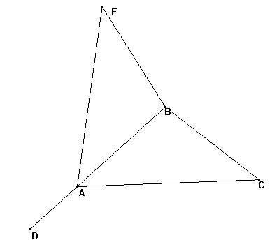
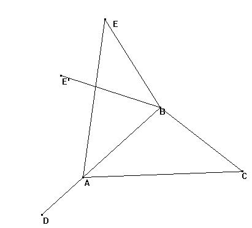
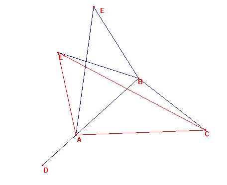
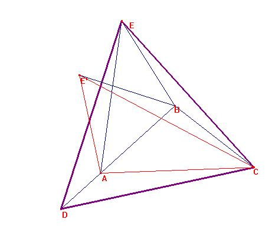

Problema 69.
Se tiene un triángulo isósceles ABC con ABC=100º.
Se construye D en la semirecta de origen B que contiene a A tal que CA=BD.
Calcular el ángulo ACD.
Solución de Damián Aranda Ballesteros (IES de Blas Infantes de Córdoba) / Ricardo Barroso Campos(Departamento de Didáctica de las Matemáticas, Universidad de Sevilla).
Sea ABC y construyamos el simétrico según la recta AB:

El triángulo CBE es tal que por construcción es isósceles en B (BE=BC), luego CBE=360º-100º-100º=160º, y BEC=BCE=10º.

Tomemos ahora el simétrico BE' del segmento BE respecto a la recta BC:
El triángulo E'BC por ser simétrico del EBC, es tal que: BC=BE'=BA, y CBE'=160º.
Al ser el ánglo ABC=100º por construcción, es E'BA= E'BC-ABC=160º-100º=60º.
Así pues, E'BA es isósceles con un ángulo de 60º, y por ello, equilátero.
Consideremos el triángulo E'AC.

El ángulo E'AC= E'AB+BAC=60º+40º=100º.
Los triángulos E'AC y CBD tienen:
los ángulos E'AC=CBD=100º , los lados: E'A=E`B=EB=CB, y AC=BD.
Luego por el criterio de congruencia de triángulos, es CE'=DC.
Es decir, CE=CE'=DC. De igual manera, será DE=DC. ASí, pues, el triángulo
DCE es equilátero, y

Por ello, DCA= 60º-BCA-BCE=60º-40º-10º=10º, como deseábamos obtener.